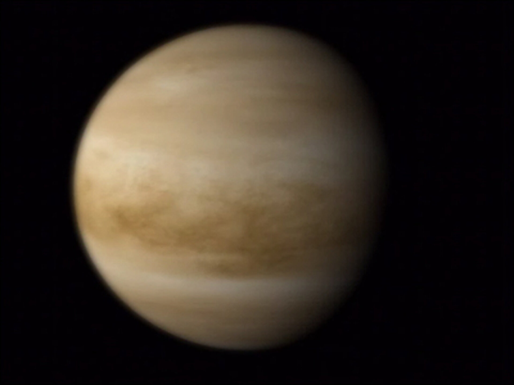
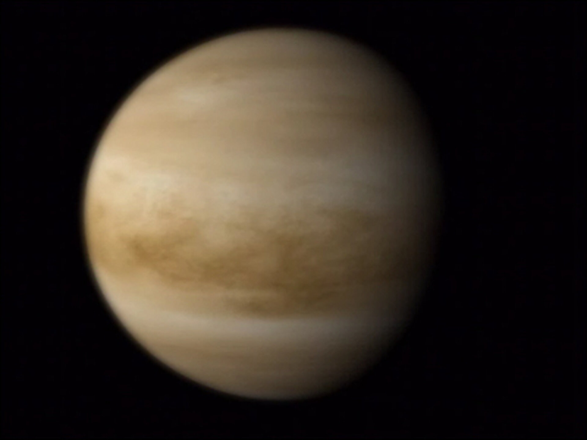

NASA launches the James Webb Space Telescope to take fascinating pictures of our universe. This telescope will bring many more groundbreaking discoveries this decade.

NASA plans to launch 2 missions to the extremely hot planet by 2030.
 

Gravitational Waves are ripples in the fabric of space-time caused by two massive objects colliding. Discovered in 2015.
In 2021‚ the Parker Solar Probe traveled through the Sun's atmosphere

The Gaia Probe made a very detailed map of the stars in our Milky Way Galaxy.

 Home
Home